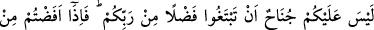
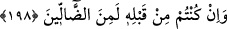

“Ancak Rabbinin, (onları îmâna mecbûr edecek) bazı âyetleri (işâretleri) geldiği
gün, önceden inanmamış, ya da îmânında bir hayır kazanmamış olan kimseye (o
günkü) îmânı bir fayda sağlamaz.” (el-En’âm, 6/158) Ve nasıl hac ihrâmına girmek
için belirli vakitler varsa, Allah’a yönelmenin de belirli vakitleri vardır. Bu da bülûğ
çağından kırk yaşına gelinceye kadarki gençlik günleridir.
Kırk yaş, olgunluk sınırıdır. Nitekim Allah Teâlâ bu konuda şöyle buyuruyor:
“Nihâyet insan güçlü çağına erip kırk yaşına varınca...” (el-Ahkâf, 46/15) Bu
sebeple meşâyıh demiştir ki: “Kırkından sonra sûfî olan nâdirdir.”
Yâni bir müridin irâde ve isteği kırk yaşından sonra ortaya çıkarsa, onun bütün
şartlarıyla gerçek maksada ulaşması nâdirdir. Fakat isteği, irâdesindeki samimiyeti ve
vuslatı sağlayan şeyler, kırk yaşından önce ortaya çıkarsa, kırkından sonra tüm gayretini
sarfederek bütün şartları ve sınırlarıyla gerçek maksada ulaşma ihtimali daha fazladır.
Gençliğinin baharında mürîd olma zamanını kaçıran kimsenin yaşlılıkta vuslata ermesi
çok zordur. Fakat sonucu cennet olan ibâdetleri yapabilir. Çünkü böyleleri yazın bol
sütünü kaçırdığına hayıflanan kimselere benzer.
Meşâyihten biri, bir cami kapısında durdu. Halk camiden kalabalık bir şekilde
çıkıyordu. Onlara bakıyor ve “Bunlar cennet’in kalabalığıdır. oturup sohbet edilecek
olanlar bunlar değil, hâs kullardır” diyordu. et-Te’vîlâtü’n-Necmiyye’de böyle
geçmektedir.
Kâşânî der ki: Kırk yaşına kadar Haccın her biri bir dönem mesâbesinde olan üç çağı
vardır: 1. Gelişme çağı. 2. Vukûf çağı. 3. Olgunluk (kühûlet) çağı. Allah Teâlâ’nın
Bakara sûresinde kurbanlık ineği nitelerken “Ne yaşlı ne de körpe. İkisi arası bir
inek.” (el-Bakara, 2/68) buyurduğu gibi orta yaş esastır.
Hâfız der ki:
Aşk, gençlik ve kalenderliği bir arada toplamak,
Ne güzeldir, sonra ince mânâlardan dem vurmak.
198. “(Hac mevsiminde ticâret yaparak) Rabbinizden gelecek bir lütfu (kazancı)
aramanızda size herhangi bir günah yoktur. Arafat’tan ayrılıp akın ettiğinizde
Meş’ar-i Haram’da Allah’ı zikredin ve O’nu size gösterdiği şekilde anın. Şüphesiz
siz daha önce yanlış gidenlerden idiniz.”
Bu âyet tüccârın ve deve kervancılarının haccı yoktur, diyenlere cevap vermek için
nâzil olmuştur. Fakat hac sırasında ticâret yapmak mübah ise de, yapmamak daha